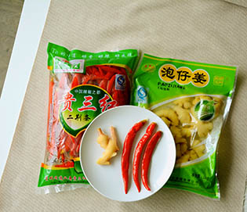
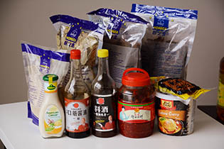

市面上常见的油采用浸出法工艺，要采用化学溶剂己烷。己烷对人体有危害。国家规定为食品级、重金属低残留，但低残留不等于0残留，而且重金属在体内会蓄积。选择物理压榨的油，在压榨过程中不使用任何化学溶剂，就不需有上述担心。
我们对油的观点是：少吃点，吃好点。我们选择纯物理压榨的非转基因食用油，同时根据不同原料的营养特点交替使用。玉米油含有丰富的亚油酸，大豆油富含两种必须脂肪酸，低芥酸菜籽油富含单不饱和脂肪酸。不同种类更换使用，才能满足身体不同需求。
我对市场上没有包装的商品始终不太信任。比如泡椒及泡姜，常常是一个很大的塑料桶盛放着，没有盖子，桶身充满了污渍。所幸的是，我们终于找到了正规厂商出品的泡椒，虽然价格不菲，还是那句话：少吃点，吃好点。
除了几个四川名牌，其余调料基本来自麦德龙的“厨之选”系列。